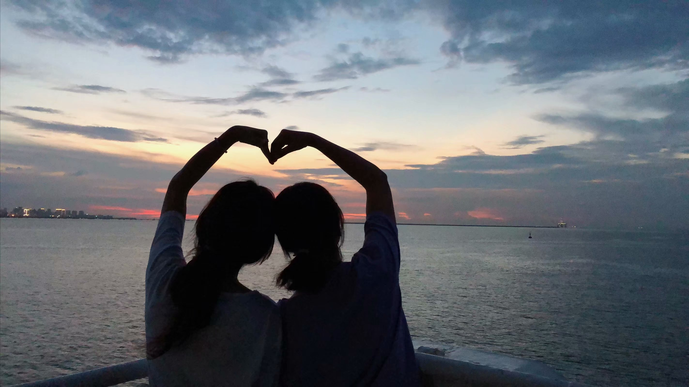
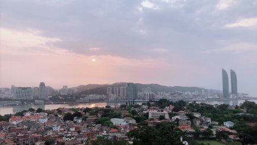

我与你谈谈旅行的这件事儿：
1.如果你像我一样，选择独自出行，尽量提前两到三周喵房间，提前一周做好大致攻略，不做无准备之仗（目前除了南昌-徽州行是场纯粹逃离无关攻略）选择最喜欢最感兴趣最能愉悦自己的线路。我喜欢避开长假以及出行高峰期，这可能是作为学生出游为数不多的好处之一了，因为可以避开人挤人、吃住消费翻倍。
2.根据行程带行李。选择最有用，最不可缺少的必备物品，一个迷你行李箱落地扔民宿，一个随身包方便游玩(想要尽量伪装成当地人)
3.现金不多带，但预算要充足，最好将所有证件整理起来放在安全的暗袋里，最好能提前准备身份证复印件在行李里，学生证这种万金油也要记得带-
4.如果独自出行，每天至少一通电话一则信息给家人朋友报平安，不要一个人潇洒快活，他们提心吊胆。
最后的忠告也是我相安无事走遍种花家的秘诀:
- 从不信任何突如其来的馅饼和艳遇;
- 不贪心、小便宜(都出来玩了，还舍不得正经吃吃喝喝？！)要时刻认清好运气哪那么容易落在你头上。
- 不轻信别人，不人云亦云，多留几个心眼有自己的思维逻辑判断力;
- 一切的快活行动都基于确保自身安全的前提下进行
- 生活常识是扎根血肉里的不用多赘述(什么夜晚不要走人少可见度低的地方，情况不好假装打电话啥的;不要对陌生人过多暴露信息啥的)
- 雨季带把伞在身上，防雨也可防身~
- 不要过多暴露自己的信息保持一颗轻松愉悦的平常心，适当警惕，就足够了。
然后多出去走走，只是心动+嘴瓢。
ikigai！！！人间值得。


- Post link: https://lingo1101.github.io/2020/10/24/travel/notice/
- Copyright Notice: All articles in this blog are licensed under unless stating additionally.
若没有本文 Issue，您可以使用 Comment 模版新建。
GitHub Issues